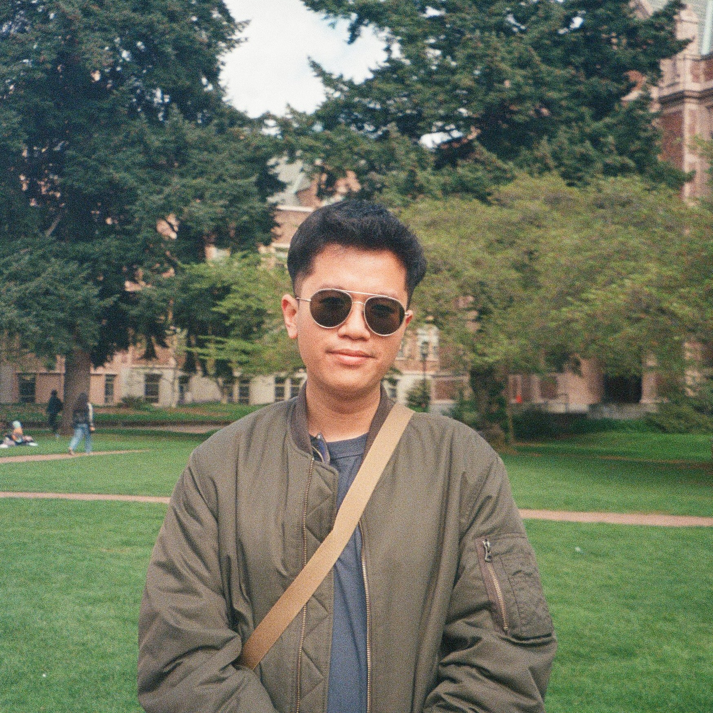

Knowledge representation and evaluation in LLMs · Retrieval-augmented generation · Agentic systems · Semantic alignment metrics · Resource-constrained deployment · Knowledge updating methods for reliable AI systems
Member, Society of Hispanic Professional Engineers